Latest Update: 3/26/16
The Diana is a horrible camera. You can read about the history of its horribleness on Wikipedia. Due to eBay's excellent marketing drawing me to their website, I happened to purchase not one, but two horrible Dianas: the Diana F+, made by Lomography, and the Diana F, the toy camera built by the Great Wall Plastic Factory in the 1960s. The original Diana was given away at carnivals or sold for the equivalent of a bit less than $4 (in 2016 dollars). It has awful image quality. The Diana F+ is sold in Urban Outfitters for the equivalent of $89 (in 2016 dollars). It has awful image quality.
Images of the camera are interspersed with the text, if you want sample pictures, skip to the end gallery.
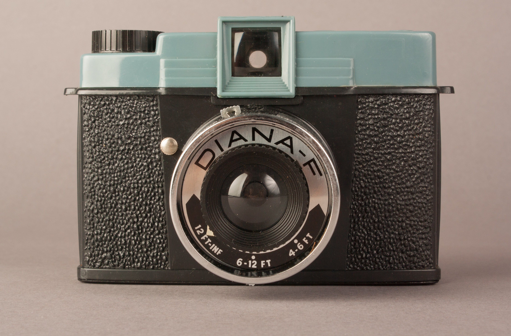
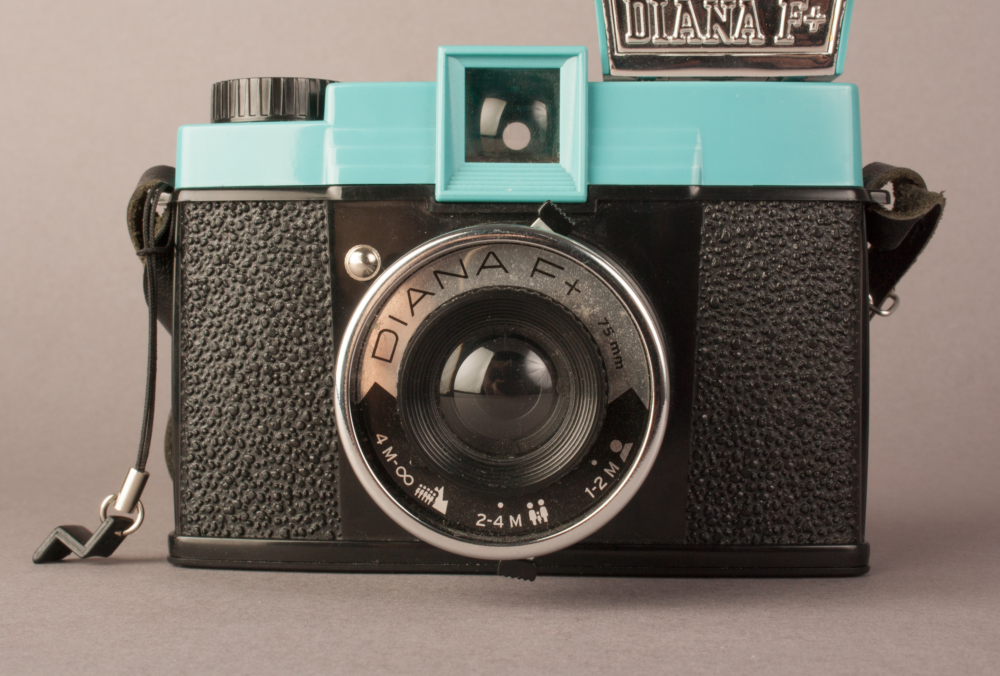
The body is plastic. The blue/green plastic on this camera is a little bit less bright than the newer Diana F+.
The Diana F is actually better than the F+ in this regard. The Diana F has little flippy tabs on the bottom of the camera that keep both spools centered without the back on the camera, making it easier to load film without three hands.
These cameras use an extremely simple shutter mechanism that consists of two pivoting discs covering the hole to the film. When you press shutter switch (it's less of a button and more of a switch), the first disc moves out of the way, and causes the second disc (which has a circular cutout) to flip across the opening. The shutter "speed" is how long the openings cross each other. In bulb mode, the second disc is stopped so that the openings are aligned.
When this Diana F arrived in my life, its shutter had broken. Unfortunately, the plastic of the lens is welded together, so I had to break it open to access the mechanism. I slipped the spring back on the small brass spring holder, sprayed some teflon lubricant in the whole mechanism, and taped it back up with gaffer's tape. It's still quite unreliable.
The aperture mechanism is a pivoting metal piece with two holes, making the three aperture settings. On my Diana F, the detent for keeping the aperture in place is very loose, so it doesn't really stay in place very well.
I tested the shutter of the Diana F with my shutter tester, I get that the true shutter speed is closest to 1/20, but it varies by more than 2/3 of a stop in either direction.
I've included pictures of the shutter mechanism if you're curious, so you don't have to break the camera open yourself.
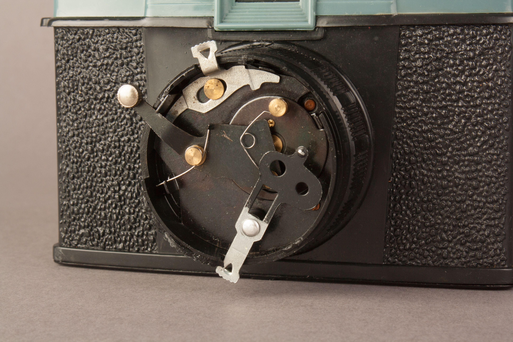
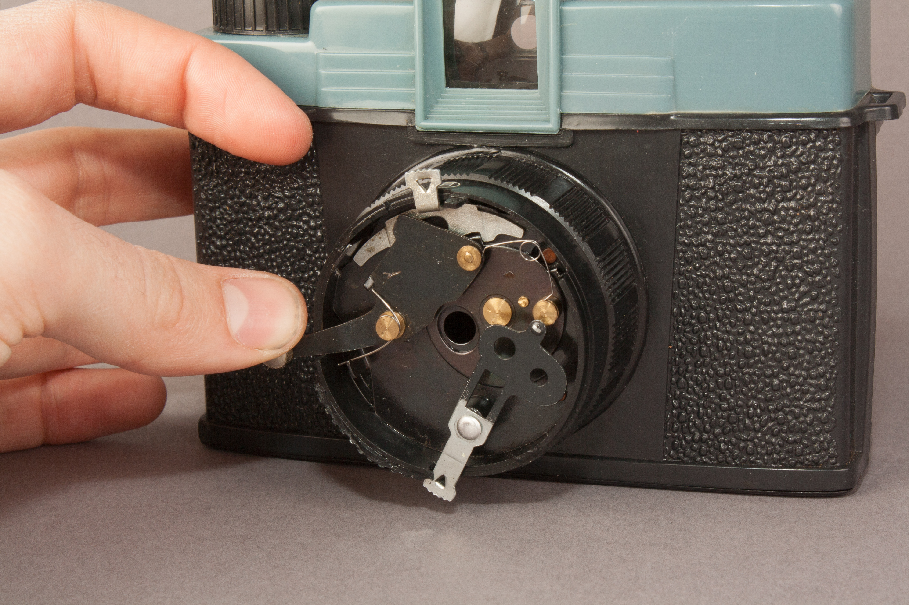
This camera has about a 44mm square frame size, which is good, because the entire rest of the film is filled with light leaks. You can fix this with some gaffer's tape, if it's bothersome. It might also be bothersome that the picture quality is awful, but whatever.
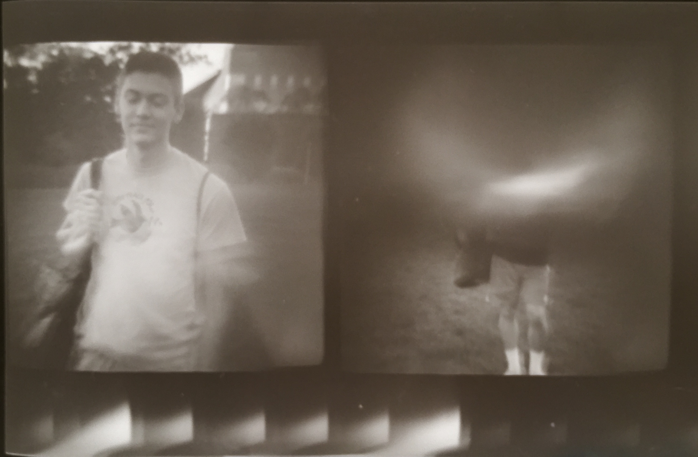
The body is plastic. Lomography did a pretty good job of copying the original Diana F. They added:
The Diana F+ has a reliable shutter mechanism, which supposedly fires around 1/60 of a second. I mean reliable in the sense of I haven't had to break the camera and fix it, though who knows, 50 years down the road. The aperture mechanism (mechanism might be a strong word) sticks in place much better than the mechanism on the Diana F. This probably goes without saying, but if you ever shoot slide film in a Diana, make sure to cross-process it, since it seems to give more latitude.
I tested the shutter of the Diana F+ with my shutter testing circuit. Lomography rated the shutter speed at 1/60, but my testing indicates it's closest to 1/180, within a tolerance of 0.15 stops. This interesting, that the shutter is 1.6 stops faster than their rating. This Diana is way faster than the Diana F. I'd be interested to test other Diana F+ cameras to see how much the variance is by camera.
The Diana F+ has the same focusing scheme (the lens screws in and out slightly) and distances as the Diana F, except the F+ distances are written in meters, and there are little icons next to the distances, for people who don't understand metric units.
The F in the name of these cameras comes from the fact that they can sync with a flash. Unfortunately, though the holes are spaced the same width apart, the F+ flash does not fit on the Diana F. My Diana F did not come with a flash, so I have no basis of comparison, but the Diana F+ flash runs on a single AA battery and puts out enough light to expose some pictures properly. I usually try to avoid direct flash, but when the image quality is so bad, what does it matter.
The Diana F+ comes with two adapters: female F+ to male hot shoe, and female hot shoe to male F+. This means you can do silly things, like put the F+ flash on a real camera, or put a real flash (or wireless flash transmitter) on the Diana F+. Why you would choose to do these things, besides looking silly, is beyond me.
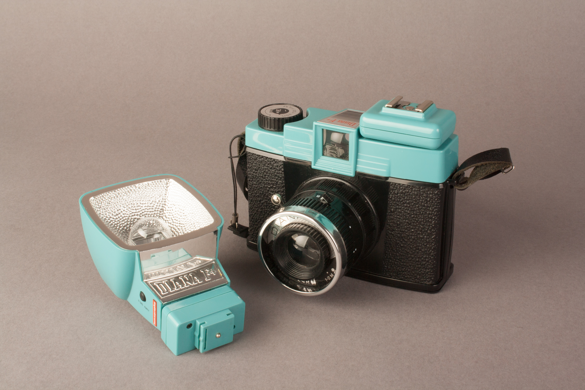
Lomography remained faithful to the original by including the light leaks. Actually, this camera is worse than the original. The light leaks intrude on the frames more than they do with the Diana F. Use gaffer's tape all around the body of the camera if you don't want nice charming light leaks all over your negatives.
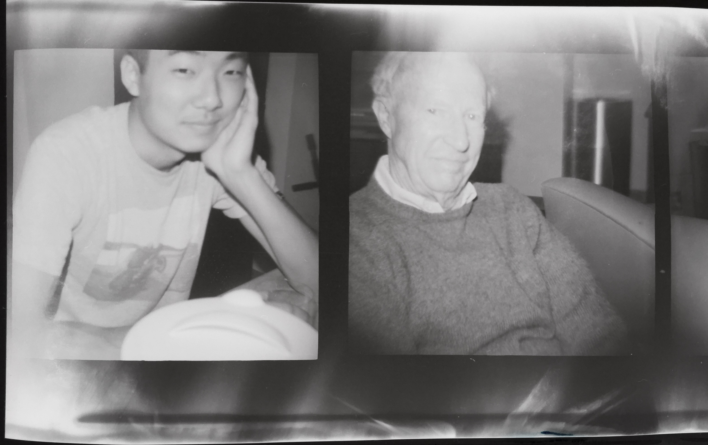
Do you feel encumbered by the ability of your camera to produce quality images? Do you want everyone to know you not only buy clothing from Urban Outfitters, but also "lifestyle" products? The Diana is perfect for you in either case. All that said — if you can get good images out of a Diana, you can get good images out of any camera. If that's what you want to practice, by all means, go for it.
If you want one of these, you know you want one. I'd recommend looking around eBay so you don't have to pay Lomography's horrible prices. If you want a "special edition," then you're honestly probably beyond help.
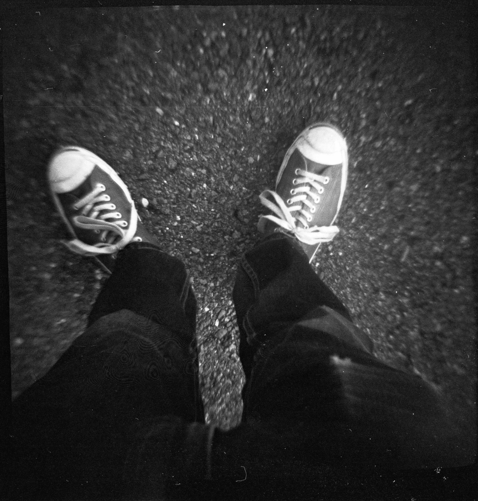
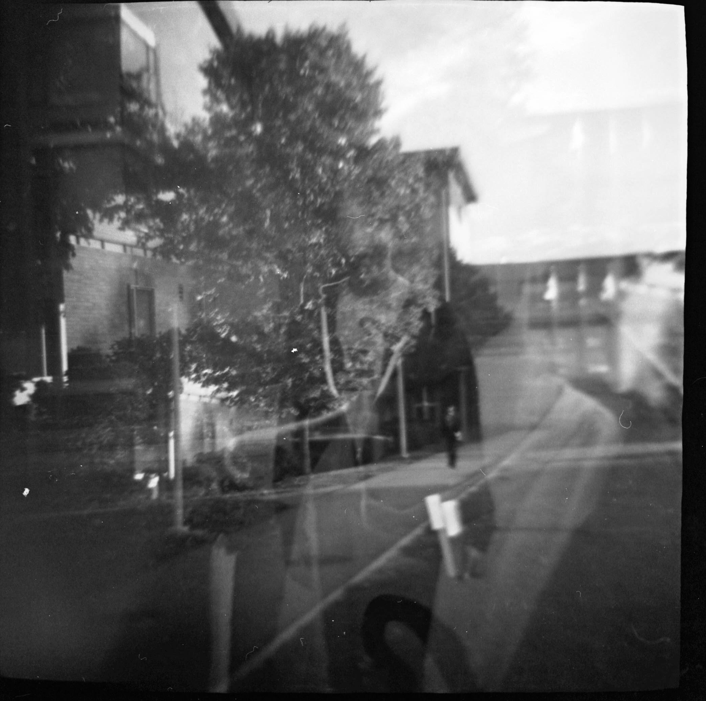
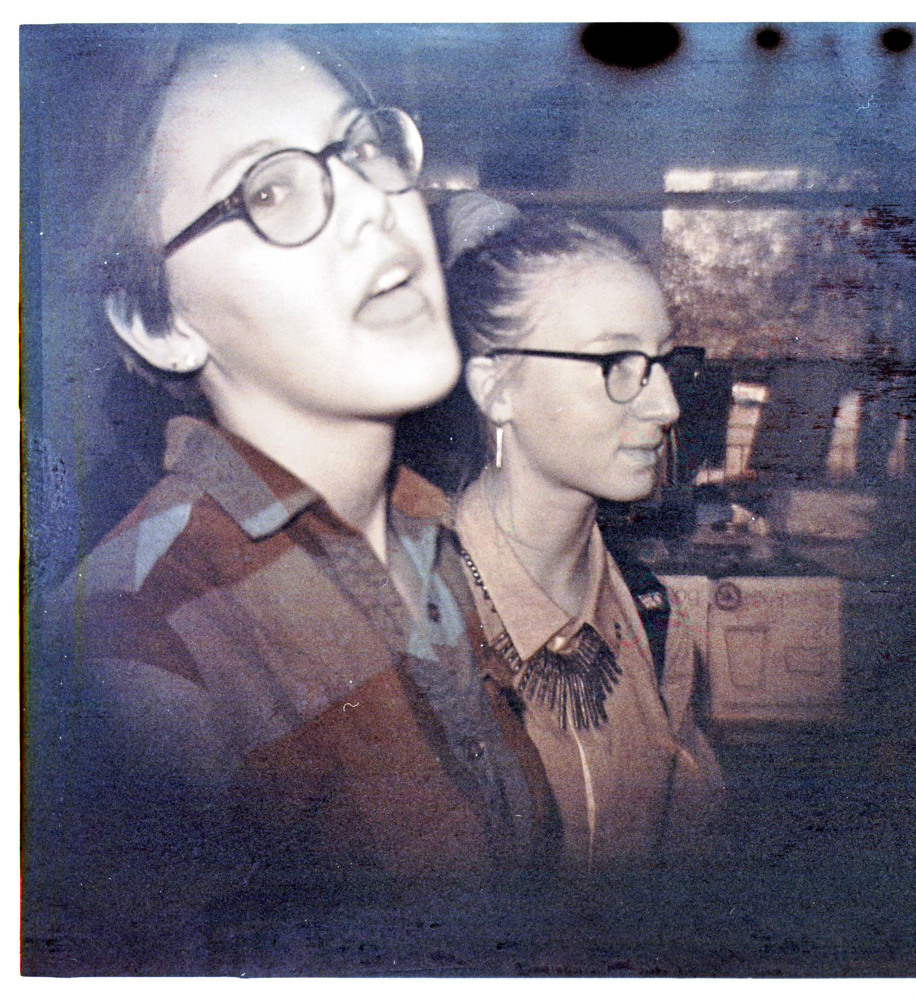
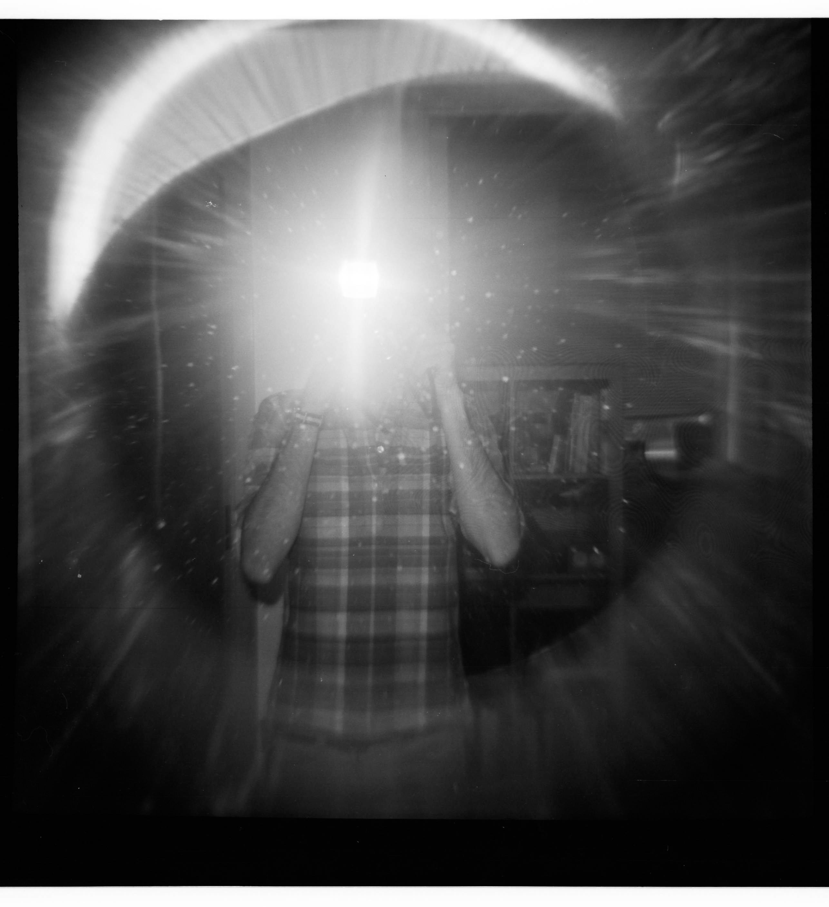
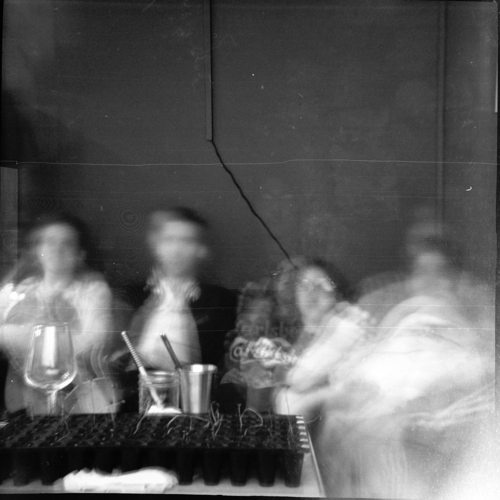
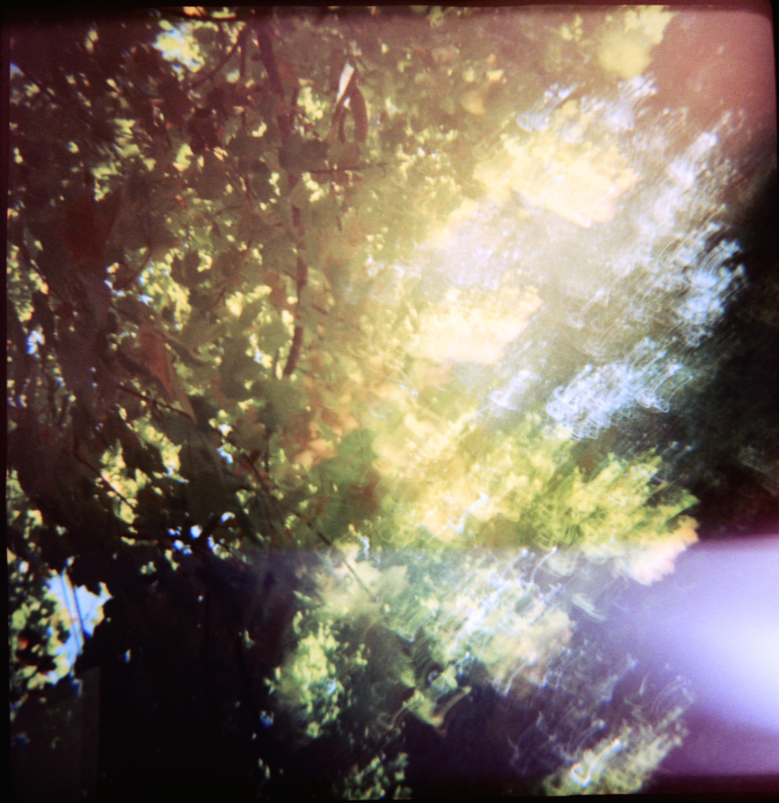